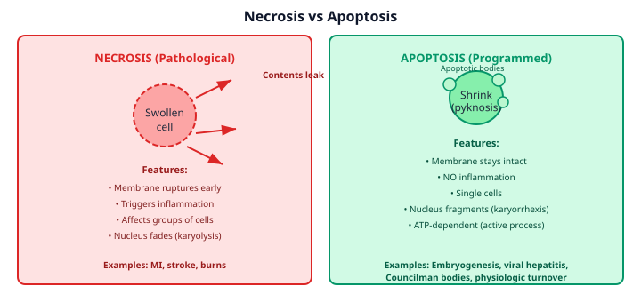
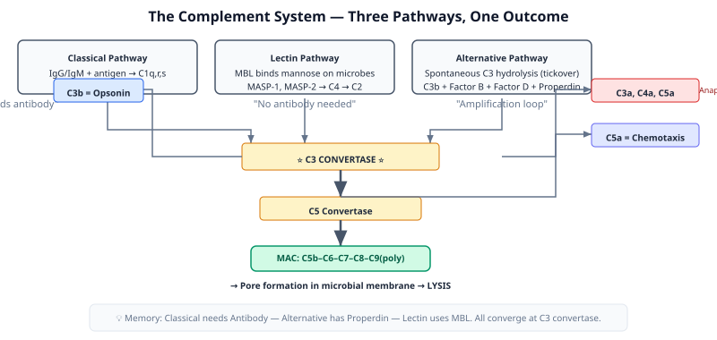

🗺️ MRCEM Blueprint Context: This lesson covers ~5 of 9 Pathology questions (~55% of Pathology, ~2.8% of total exam). Pathology is the smallest category at 5% of the exam (9/180 Qs). The 5 subcategories covered here: inflammatory responses, immune responses, infection, wound healing, haematology. Do not over-invest time here — these concepts underpin respiratory pathology, sepsis, and trauma but are NOT the exam's heavy hitters. Anatomy (33%) and Physiology (33%) are.
Why This Matters
Every disease you see in the Emergency Department — from anaphylaxis to myocardial infarction, sepsis to trauma — begins at the cellular level. This lesson covers the entire Pathology domain for MRCEM Primary (~5 of the 9 Pathology questions, ~2.8% of the total exam). The concepts here underpin respiratory pathology, sepsis understanding, and autoimmune disease recognition across the syllabus.
Knowledge: The Core Framework
1. Cellular Responses to Injury
Cells have four fundamental responses to stress or injury:
Response
What Happens
Reversible?
Key Feature
Adaptation
Cell changes size/number/type to survive
Yes
Hypertrophy, hyperplasia, atrophy, metaplasia
Reversible injury
Cellular swelling, fatty change
Yes
ATP depletion → Na+/K+ pump failure → swelling
Irreversible injury
Point of no return
No
Mitochondrial membrane damage, Ca²⁺ influx
Cell death
Necrosis or apoptosis
No
Necrosis = messy; Apoptosis = clean/programmed
🔥 Quick recall: Name the 4 types of cellular adaptation
Hypertrophy — increase in cell SIZE Hyperplasia — increase in cell NUMBER Atrophy — decrease in cell size Metaplasia — change from one mature cell type to another
2. Necrosis vs Apoptosis
This is one of the highest-yield distinctions in MRCEM Primary.
🧠 Exam pattern: MRCEM loves asking "Which type of cell death is characterised by..." and giving you a description. Memorise the membrane integrity and inflammation rows — those are the most reliable differentiators.
3. Types of Necrosis
Type
Appearance
Classic Example
Coagulative
Firm, pale, architecture preserved
Myocardial infarction
Liquefactive
Liquid, pus-filled
Brain infarct, abscess
Caseous
Cheese-like, granular
Tuberculosis
Fat necrosis
Chalky white (saponification)
Acute pancreatitis
Gangrenous
Black, dry or wet
Limb ischaemia
Fibrinoid
Bright eosinophilic vessel walls
Malignant hypertension, vasculitis

Necrosis (pathological, membrane rupture, inflammation) vs Apoptosis (programmed, intact membrane, no inflammation).
4. Acute Inflammation — The 5 Cardinal Signs
PRISH: Pain, Redness, Immobility, Swelling, Heat
The vascular changes that produce these:
Transient vasoconstriction (seconds)
Vasodilation → redness + heat (histamine, NO, prostaglandins)
This is extremely high-yield. MRCEM Primary loves testing which type of hypersensitivity underlies a given disease. Every type maps to a mechanism and a set of classic diseases.
Type
Mechanism
Mediators
Classic Examples
Onset
Type I Immediate / Anaphylactic
IgE cross-linking on mast cells → degranulation
Histamine, leukotrienes, PAF, tryptase
Anaphylaxis, allergic asthma, hay fever, urticaria, food allergy
Minutes
Type II Antibody-mediated / Cytotoxic
IgG/IgM bind to cell-surface antigens → complement activation + phagocytosis
🧠 Exam pattern: The exam loves asking "Which hypersensitivity type?" for a given disease. Memorise the mechanism not just the name. Tip: Type II = antibodies attacking cells (ACID: Autoimmune haemolytic anaemia, Cytotoxic, ITP, Drugs like penicillin-induced haemolysis). Type III = complexes depositing in kidneys/joints/skin. Type IV is the only one NOT antibody-mediated — it's T cells.
🔥 Anaphylaxis, autoimmune haemolytic anaemia, serum sickness, and contact dermatitis — which hypersensitivity type is each?
Anaphylaxis = Type I (IgE, mast cells) AIHA = Type II (IgG against RBCs) Serum sickness = Type III (immune complexes) Contact dermatitis = Type IV (T-cell mediated, delayed)
8. The Complement System
Three activation pathways, one terminal pathway. All converge on C3 convertase → C5 convertase → MAC (membrane attack complex).
No antibody needed; "tickover" activation; Properdin stabilises
Lectin
Mannose-binding lectin (MBL) binding to microbial carbohydrates
MBL, MASP-1, MASP-2 → C4 → C2
MBL structurally similar to C1q; no antibody needed
⚡ The anaphylatoxins — C3a, C4a, C5a: These are cleaved off during complement activation and trigger mast cell degranulation (hence the name). C5a is also the most potent chemotactic factor for neutrophils. C3b is the key opsonin. MAC = C5b-C6-C7-C8-C9 (polymerised) — creates pores in membranes → lysis.

Complement system: Classical, Lectin, and Alternative pathways converge at C3 convertase → C5 convertase → MAC (C5b–C9).
9. Wound Healing
Feature
Primary Intention
Secondary Intention
Wound edges
Apposed (sutured)
Gaping (left open)
Granulation tissue
Minimal
Extensive — fills from base
Contraction
Minimal
Significant — myofibroblasts
Scar
Small, linear
Large, irregular
Examples
Surgical incision, clean laceration
Abscess drained, pressure ulcer, dehisced wound
Phases of Wound Healing
Haemostasis (immediate) — platelet plug + fibrin clot. PDGF and TGF-β released from platelets.
Inflammation (days 1-6) — neutrophils then macrophages. Macrophages are ESSENTIAL — they clear debris AND secrete growth factors. Cannot heal without them.
Proliferation (days 4-21) — angiogenesis, fibroblast migration, collagen deposition (type III first, then replaced by type I). Granulation tissue forms.
Remodelling (day 21 → 1 year) — collagen III → collagen I, cross-linking, scar maturation. Wound strength reaches ~80% of original.
🧠 Exam pattern: "Which phase of wound healing..." is a classic SBA. Know that macrophages are the master regulators — they appear at day 2-3, peak at day 3-5, and are the rate-limiting cell for healing. Vitamin C is required for collagen cross-linking (prolyl hydroxylase cofactor). Zinc is required for collagenase and fibroblast proliferation.
🔬 Recalled Exam Pattern: The real MRCEM Primary exam consistently asks one question linking immunofluorescence patterns on renal biopsy to hypersensitivity type. The exam expects you to know: linear IgG deposition along the GBM = Type II (anti-GBM antibodies → Goodpasture's syndrome); granular ("lumpy-bumpy") IgG + C3 = Type III (immune complex deposition → SLE nephritis, post-streptococcal GN). This linear vs. granular distinction has appeared in multiple sittings. Know it cold.
Skills: Retrieval Practice
Answer each question from memory before clicking. Retrieval builds storage strength. These are constructed to real MRCEM difficulty — clinical vignettes testing mechanism-level understanding, not simple recall.
Q1. A 58-year-old man presents with crushing central chest pain radiating to the left arm. ECG shows ST elevation in leads V1–V4. He dies 36 hours later despite intervention. At autopsy, the affected myocardium appears firm and pale with preserved tissue architecture on microscopy. This pattern of cell death is BEST described as:
A. Liquefactive necrosis — enzymatic dissolution into liquid debris
B. Caseous necrosis — cheese-like, granular eosinophilic material
C. Coagulative necrosis — firm, pale tissue with ghost architecture
D. Fat necrosis — chalky white deposits with saponification
E. Fibrinoid necrosis — bright eosinophilic vessel wall staining
Q2. A 52-year-old woman with acute bacterial pneumonia has a sputum sample showing abundant neutrophils. The migration of these neutrophils from the bloodstream into the alveolar space follows a sequence: margination → rolling → adhesion → diapedesis → chemotaxis. Which mediator is the MOST potent chemotactic factor directing neutrophils to the site of infection?
A. Histamine — released from mast cell granules
B. Prostaglandin E₂ — derived from the COX pathway
C. Leukotriene B₄ — derived from the LOX pathway
D. Bradykinin — cleaved from high molecular weight kininogen
E. Complement C5a — cleaved during complement activation
Q3. A 24-year-old woman receives an intramuscular injection of a contrast agent and within minutes develops widespread urticaria, angioedema of the lips, and wheeze. These clinical features are caused by mast cell degranulation with release of histamine and other preformed mediators. Which complement fragments are the anaphylatoxins that can directly trigger mast cell degranulation?
A. C1q and C4 — classical pathway recognition components
B. C3b and Factor B — opsonin and alternative pathway component
C. C3a and C5a — cleaved fragments with anaphylatoxin activity
D. C5b, C6, and C7 — early membrane attack complex components
E. Factor H and Factor I — complement regulatory proteins
Q4. All of the following are characteristic features of apoptosis EXCEPT:
A. Cell shrinkage and membrane blebbing
B. Plasma membrane remains intact until late stages
C. Nuclear chromatin condensation and fragmentation (karyorrhexis)
D. Provocation of a robust acute inflammatory response
E. Occurrence in scattered individual cells rather than confluent groups
Q5. A 30-year-old nurse develops an intensely pruritic, erythematous, vesicular rash on her hands 48 hours after starting to wear latex gloves. Patch testing confirms a Type IV hypersensitivity reaction to latex accelerators. Which of the following is the PRIMARY effector cell responsible for the clinical manifestations of this reaction?
A. Mast cells pre-sensitised with latex-specific IgE
B. B lymphocytes producing latex-specific IgG antibodies
C. CD4⁺ Th1 lymphocytes secreting IFN-γ and activating macrophages
D. Neutrophils recruited by immune complex deposition
E. Eosinophils releasing major basic protein and eosinophil peroxidase
Q6. A 72-year-old man with long-standing, poorly controlled type 2 diabetes mellitus and peripheral arterial disease develops a black, shrivelled, mummified great toe with a well-defined line of demarcation between viable and non-viable tissue. There is no surrounding erythema, pus, or systemic signs of infection. This pattern of tissue necrosis is BEST classified as:
A. Coagulative necrosis — firm, pale infarction with ghost architecture
B. Liquefactive necrosis — enzymatic dissolution into liquid pus
C. Caseous necrosis — cheese-like, granular appearance with granulomas
D. Fat necrosis — chalky white saponification of adipose tissue
E. Gangrenous necrosis — dry, black, mummified ischaemic tissue
Q7. All of the following chemical mediators are derived from the CYCLOOXYGENASE (COX) pathway of arachidonic acid metabolism EXCEPT:
A. Prostaglandin E₂ — mediates vasodilation and pain sensitisation
B. Prostacyclin (PGI₂) — inhibits platelet aggregation
C. Thromboxane A₂ — promotes platelet aggregation
D. Leukotriene B₄ — potent chemotactic factor for neutrophils
E. Prostaglandin D₂ — produced by mast cells
Q8. A 28-year-old woman with systemic lupus erythematosus (SLE) presents with hypertension, peripheral oedema, and frothy urine. Renal biopsy shows diffuse proliferative glomerulonephritis with granular ("lumpy-bumpy") deposits of IgG, IgM, and C3 along the glomerular basement membrane on immunofluorescence. In contrast to Goodpasture's syndrome (which shows LINEAR IgG deposition), this granular pattern indicates which hypersensitivity reaction?
A. Type I — IgE cross-linking on mast cells in the glomerulus
B. Type II — anti-GBM antibodies binding directly to glomerular basement membrane
C. Type III — immune complex deposition in the glomerular capillary wall
D. Type IV — T-cell mediated destruction of glomerular podocytes
E. Type V — stimulatory antibodies activating glomerular cell receptors
Q9. A 48-year-old man undergoes an uncomplicated open inguinal hernia repair. The wound is closed in layers with absorbable sutures. On postoperative day 7, the wound is clean, dry, and healing well. At this stage of wound healing (the proliferative phase), which type of collagen is PREDOMINANTLY being deposited by fibroblasts in the granulation tissue?
A. Type I collagen — mature, thick fibres with high tensile strength
B. Type II collagen — found in hyaline and elastic cartilage
C. Type III collagen — thinner fibres; the initial collagen of granulation tissue
D. Type IV collagen — mesh-like network of the basement membrane
E. Type V collagen — minor component associated with type I fibrils
Q10. All of the following statements regarding the alternative complement pathway are correct EXCEPT:
A. It can be activated spontaneously by hydrolysis of C3 (the "tickover" mechanism)
B. It does not require the presence of antibody for activation
C. Properdin (Factor P) stabilises the C3 convertase (C3bBb) on microbial surfaces
D. It requires C1q recognition of antigen-antibody complexes
E. Factor B and Factor D are unique components of this pathway
Key Takeaways
Necrosis vs apoptosis = membrane rupture + inflammation vs programmed + contained. Know this cold.
Hypersensitivity Type I–IV — IgE/mast cells (I), IgG against cells (II), immune complexes (III), T cells (IV). Type IV is the only one not antibody-mediated.
🔬 Real exam intel: Based on recalled questions, the exam tests basic science detail not clinical recognition. Expect questions like "outermost layer of the stomach" (serosa), not "how do you manage anaphylaxis." The "all EXCEPT" format is common. Pass rate ~25%, pass mark ~108/180.
🎬 Video Resources
Watch these for a different angle on the material. Use 1.25–1.5× speed for review.